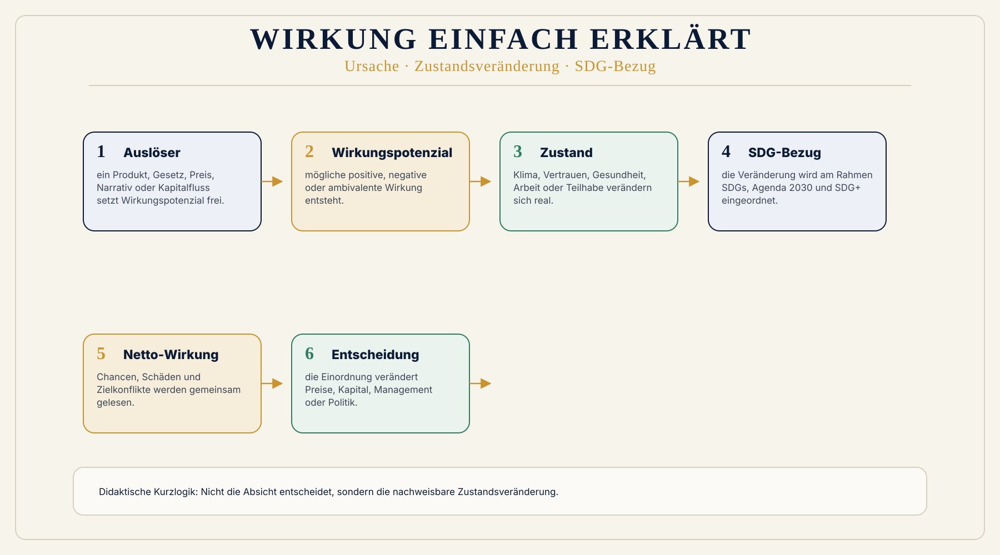

Alltag
Ein Preis zeigt, was bezahlt wird. Er zeigt nicht automatisch, welche Folgen bei Arbeit, Gesundheit, Klima oder Demokratie entstehen.
 Wirkungsökonomie
Wirkungsökonomie
Verstehen
Die Wirkungsökonomie fragt nicht zuerst: Was bringt Gewinn? Sondern: Was verändert sich wirklich - für Menschen, den Planeten und die Demokratie?
Wirkung ist die tatsächliche Veränderung von Zuständen. Sie kann positiv, negativ oder neutral sein. Bewertet wird sie am Referenzrahmen der SDGs, der Agenda 2030 und SDG+.
Zielgröße der WÖk ist positive Netto-Wirkung für Mensch, Planet und Demokratie. Diese Seite erklärt die Grundidee ohne Fachvokabular. Das Modell im Detail kommt später.
Audio verfügbar.
Einfach erklärt
Wirkungsökonomie wird verständlich, wenn man zuerst fragt, was sich im Alltag verändert. Danach kommen die Begriffe, Daten und Bewertungsregeln.
Ein Preis zeigt, was bezahlt wird. Er zeigt nicht automatisch, welche Folgen bei Arbeit, Gesundheit, Klima oder Demokratie entstehen.
Wirkung ist die tatsächliche Veränderung von Zuständen. Sie kann positiv, negativ oder neutral sein.
Ziel der WÖk ist positive Netto-Wirkung für Mensch, Planet und Demokratie. Schwere Schäden dürfen nicht schöngerechnet werden.
Einfache Beispiele
Der Preis zeigt den Kaufbetrag. Er zeigt nicht automatisch Wasser, Chemie, Arbeitsbedingungen, Transport und Entsorgung.
Ein Faktencheck prüft Wahrheit. Eine Wirkungsanalyse fragt zusätzlich, welche Frames und Resonanzräume geöffnet werden.
Gewinn zeigt Ergebnis. Er zeigt nicht, ob Lieferketten, Kultur, Kapital und Produkte Zukunftsfähigkeit stärken oder Risiken auslagern.
Grundlagen
Der Einstieg bleibt einfach: Erst verstehen, was sich verändert. Dann prüfen, ob diese Veränderung Mensch, Planet und Demokratie stärkt oder schwächt.
Wirkung
Ein Produkt, ein Gesetz, ein Artikel oder eine Investition erzeugt Zustandsveränderungen: Gesundheit, Klima, Vertrauen, Teilhabe, Ressourcen, Demokratie.
Wirkungspotenzial
Bei Sprache, Technologie oder neuen Maßnahmen ist Wirkung oft noch nicht nachgewiesen. Dann geht es um plausible Wirkungspotenziale, Resonanzrisiken und Datenlücken.
Positive Netto-Wirkung
Nicht jeder gute Einzelwert reicht. Die WÖk fragt nach der zusammengeführten Wirkung mit Schutzregeln: kritische Schäden dürfen nicht schön gerechnet werden.
Rückkopplung
Reporting beschreibt. Rückkopplung verändert. Wirkung muss in Preise, Steuern, Kapital, Beschaffung, Management, Politik und Alltag zurückfließen.
Wirkungsfluss
Diese Grafik zeigt, wie aus einer Handlung zunächst ein Wirkungspotenzial entstehen kann, wann von eingetretener Wirkung gesprochen wird und wie Bewertung in Entscheidungen zurückfließt.
